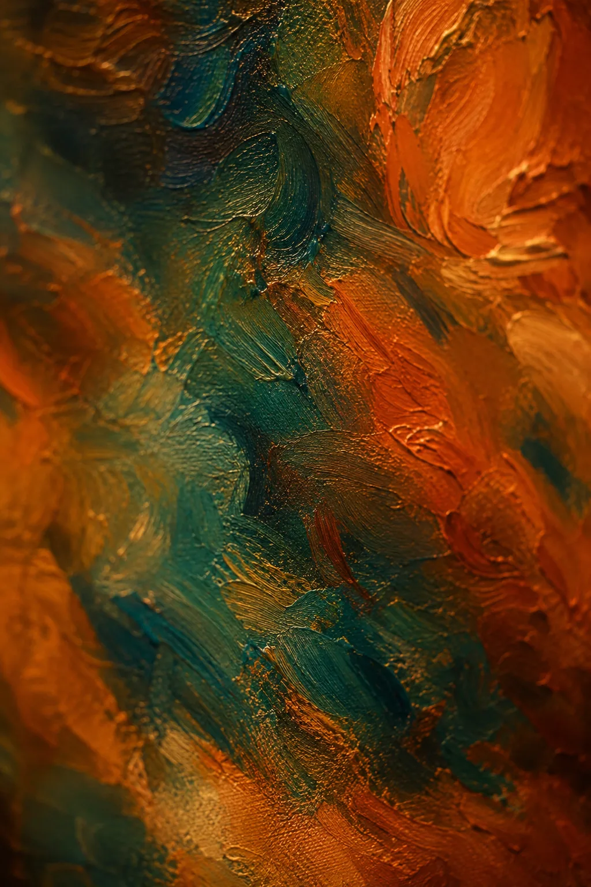
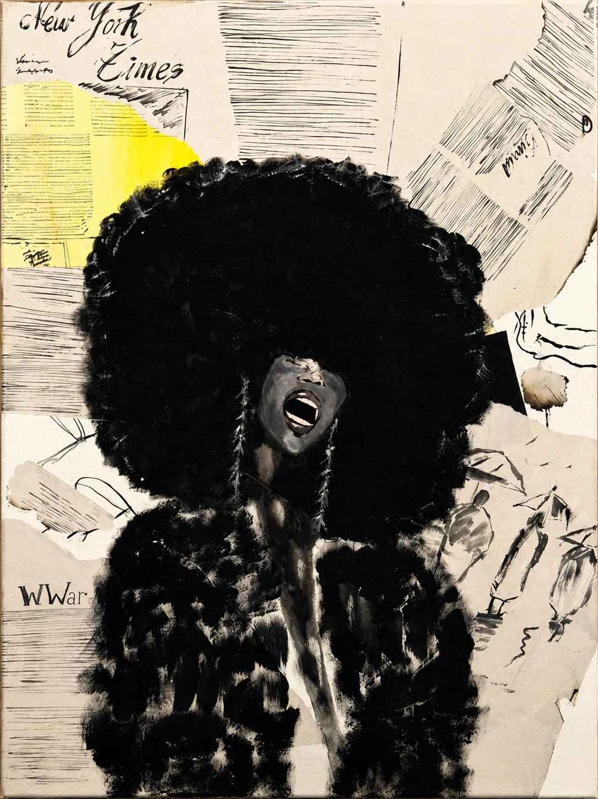

Indirah
Accueil
Oeuvres
A propos
Contact
FR
/
EN

Série en cours
Peindre ce que les mots taisent.
Indirah — peintre, figures & émotions.
Découvrir les œuvres
Rencontrer l'artiste
Défiler
↓
Aperçu
Quelques œuvres
Sous les pivoines
L'Accord intérieur

À pleine voix
Voir toutes les œuvres
L'artiste
Ses figures donnent une présence à ce qui reste sans voix.
Rencontrer l'artiste
Une œuvre vous parle ?
La contacter
Accueil
Oeuvres
A propos
Contact
FR
/
EN